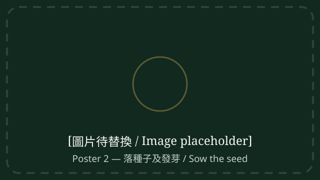
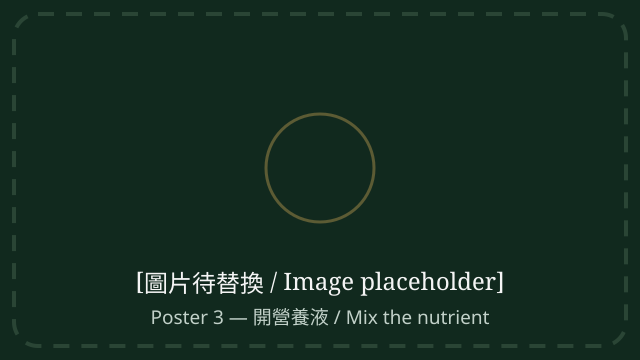
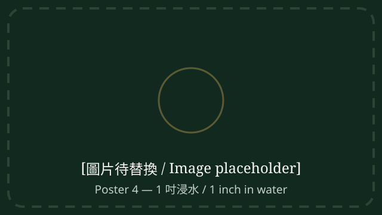
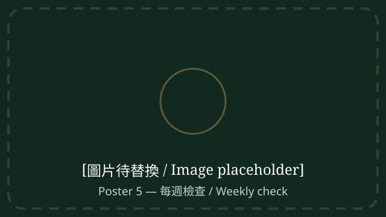
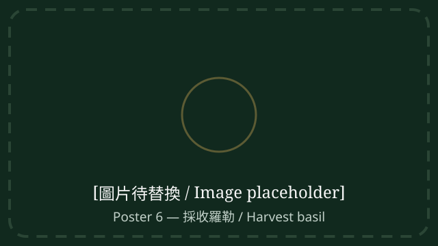

簡單方法，真實效果
- 100% 可回收瓶使用
- 0 電費
- 1 吋 浸水深度
記住兩件事
- ✓ 底部 1 吋浸水
- ✕ 之後不要補水
根的下半部要浸在水裡。水面下降後，就不要再加水。
開始種植
居家水培快速指南
準備好材料，跟著 7 個步驟做。
套裝內容
- 2 公升不透光瓶
- 網盆
- 海綿
- 發芽塊
- 羅勒種子
- 葉菜營養液
7 個步驟
-
準備容器
用不透光、食品級容器，容量 1–4 公升。回收瓶要用黑膠紙、錫紙或深色套包好。
-
發芽
在濕潤的發芽塊放 1–2 粒種子，等 3–7 日。
-
移苗
幼苗長出後，連發芽塊放入海綿和網盆。
-
開營養液
用瓶蓋量度分量，按包裝指示加水稀釋。
-
放入網盆
網盆底部 1 吋浸在水裡。
-
之後不要補水
不要再加水，讓水位慢慢下降。
-
放明亮窗邊
不用水泵、不用電、不用天天澆水。
底部 1 吋浸水 之後不要補水
底部 1 吋浸水．之後不要補水
每週照顧
每星期花一兩分鐘檢查就可以。
-
檢查水位
看看網盆底部是否仍然浸在水裡。不要補水。
-
檢查根的顏色
白色根＝健康；啡色或黏滑＝請看疑難排解。
-
檢查綠藻
如果水變綠，或見到光線照到瓶內，請包好瓶身。
-
颱風前
打風之前，把瓶子移到地面或低層架子。
影片教學
每段 1–2 分鐘的廣東話短片。
-
影片準備中
開箱與組裝
短片：把套裝組裝好，認識每個部件。
逐字稿：（影片準備中，暫以文字說明代替。）
-

影片準備中落種子及發芽
短片：在發芽塊放種子，保持濕潤，等待發芽。
逐字稿：（影片準備中，暫以文字說明代替。）
-

影片準備中開營養液及量度瓶蓋
短片：用瓶蓋量營養液，按指示加水。
逐字稿：（影片準備中，暫以文字說明代替。）
-

影片準備中底部 1 吋浸水與「不要補水」
短片：把網盆放好，之後不要再加水。
逐字稿：（影片準備中，暫以文字說明代替。）
-

影片準備中每週檢查及常見問題
短片：每星期檢查水位、根和綠藻。
逐字稿：（影片準備中，暫以文字說明代替。）
-

影片準備中採收羅勒
短片：摘外圍葉片，讓羅勒繼續生長。
逐字稿：（影片準備中，暫以文字說明代替。）
疑難排解
先找出症狀，再看可能原因和簡單做法。
-
種子沒有發芽
溫度太低，或發芽塊太乾、太濕。
保持發芽塊濕潤，放在溫暖位置，再等 3–7 日。
-
水有綠藻
光線照到瓶內的水。
用黑膠紙、錫紙或深色套包住瓶身。
-
根變啡色或黏滑
水溫太高，或水裡空氣不足。
換新營養液，把瓶子移到陰涼位置。如仍然黏滑，重新開始種。
-
葉子變黃
營養不足，或陽光太多。
按包裝重新調配營養液，並移到明亮但無直曬的位置。
-
水位太低
水已被植物用完，屬正常。
讓它繼續，水位接近底部時就可以採收。
-
瓶身漏光
瓶子不夠遮光。
用黑膠紙、錫紙或深色套包好整支瓶子。
-
颱風前怎麼辦
強風可能吹倒瓶子。
打風前把瓶子移到地面或低層架子，遠離窗邊。
採收
時間因植物和季節而不同。
-
羅勒、薄荷
摘外圍的葉，中間會繼續生長。
-
生菜
摘外葉，或一次過整棵採收。
-
小白菜
水位差不多用完時，整棵採收。
摘外圍葉片，植物就可以繼續生長。
這方法適合葉菜和香草，不適合番茄等大型結果作物。
購買補充品
只有營養液和種子需要補充。瓶子可以重複使用。
購買前請先致電或查看網頁確認。營養液和種子需要補充，但瓶子可以永久重用。
網上購買
本地種子及綜合園藝網店
-
香港高華種子網店
香港老字號種子公司，專營適合本地氣候的當季葉菜、瓜果、香草及食用花種子，同時提供現貨幼苗及種植用品。
前往選購 -
樂活都市農夫
主打家庭有機種植，網店有售各類蔬果種子以及「NICE 麗施」等濃縮或即用型植物營養液。
前往選購 -
繽紛園藝網店
香港大型園藝品牌，網上商店提供多款進口液體肥及各類花卉、觀葉植物專用營養液。
前往選購 -
花寶香港
提供著名的「日本花寶」各系列濃縮營養液（針對觀葉、開花或蔬果專用），以及配套的種子與培植土。
前往選購
水耕及室內種植專門店
-
Veggroom
專注於室內水耕種植，提供 pH 平衡水耕栽培植物營養液、香草及蔬菜種子補充裝，以及育苗用的椰纖土。
前往選購 -
HYPONICA 香港網店
專營日本製水耕及土耕兩用營養液，包括免稀釋的「即用營養液」及高濃度濃縮液，適合從幼苗到結果的各個階段。
前往選購
大型綜合網購平台
-
HKTVmall
平台內有多間本地園藝商戶進駐，可一站式購買各類花草蔬果種子、水培植物營養液及園藝工具，適合搭配日常百貨免運費送貨。
前往選購
啟德及附近實體店
啟德／新蒲崗／九龍灣周邊
-
Forest Round Round
地址： 九龍灣宏開道 20 號楊耀松第八工業大廈 11 樓 C1 室（出電梯左轉，走廊直行到尾）
電話： +852 5238 6664
營業時間： 週四至週日及公眾假期 11:00 – 21:00；週一、週二需預約到訪；週三休息
本地人氣植物選物店（多肉植物、塊根植物、盆景與手工陶器），偶爾有植料及種植諮詢，距離啟德不遠。
-
動力農莊 天台農莊
地址： 九龍觀塘觀塘道工業中心第二期 13 樓 T 室天台（距離觀塘港鐵站約 2 分鐘路程）
電話： +852 6935 4327
市區天台智能農莊，提供有機種植課程及零售肥料、種子與園藝工具。
-
森流 GreenFlow
地址： 觀塘偉業街 172 號堅德工業大廈 14 樓 C 室
營業時間： 星期一至五 12:30 – 20:00；星期六、日及公眾假期 13:00 – 19:00
集觀賞植物、水族、生態造景於一身的工廈店，常有水生／水培相關佈置與用品。
太子花墟一帶（車程約 10–15 分鐘）
-
栽蒔 Joys of Growing（繽紛園藝旗下）
地址： 九龍旺角花墟道 6-8 號地下（或太子花墟道 8 號百花閣地下）
營業時間： 星期一至日 10:00 – 19:00（公眾假期或特別日子時間或有變動）
繽紛園藝旗下專門售賣種子、肥料、農藥及各類種植用品的實體店，水培營養液與種子種類豐富。
-
繽紛園藝 Brighten Floriculture
地址： 九龍油尖旺區花墟道 28 號地下
電話： +852 2380 5113
營業時間： 星期一至日 10:30 – 19:00（年初一至三休息）
多層大型花店與園藝用品中心，有售水耕專用營養液（如荷蘭進口品牌）及水種盆栽。
-
森記園花卉出入口公司
地址： 九龍旺角太子道西 162-164 號華邦商業大廈地下
電話： +852 2380 2753 / 2396 6699
營業時間： 星期一至日 09:30 – 19:00
老字號園藝店，提供各國進口種子、種苗及園藝資材。
需要補充：營養液、種子
瓶子可重用，不用再買。
常見問題
-
為何不用泥土？
根直接吸收水中的營養，所以不用泥土，也較少蟲害。
-
為何不用泵或電？
被動式水培法（Kratky 方法）靠水位自然下降，讓根一半浸水、一半接觸空氣，所以不用泵、不用電。
-
為何不要補水？
水面下降後，根的上半部會接觸空氣。如果補水，根就會缺氧。
-
可以用回收瓶嗎？
可以。瓶子要食品級、不透光，並用黑膠紙、錫紙或深色套包好。
-
可以種什麼？
羅勒、薄荷、生菜、小白菜等葉菜和香草。不適合番茄等大型結果作物。
-
營養液如何存放？
放在陰涼、小朋友拿不到的地方，蓋好瓶蓋，並按包裝指示使用。
-
忘記了怎麼做怎麼辦？
掃描瓶身 QR code 回到本頁，或列印本頁的快速指南貼在瓶邊。
聯絡
想參加工作坊或有疑問，歡迎聯絡我們。